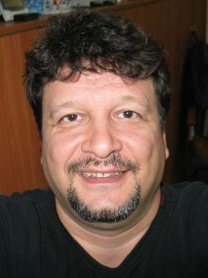
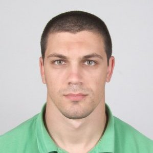
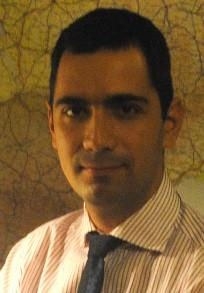
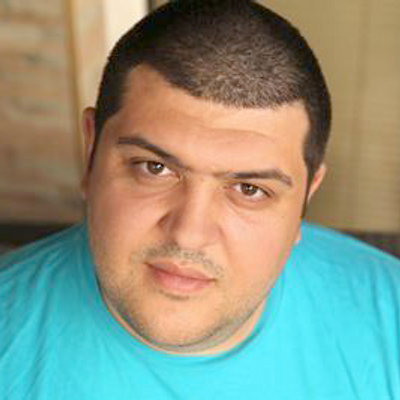
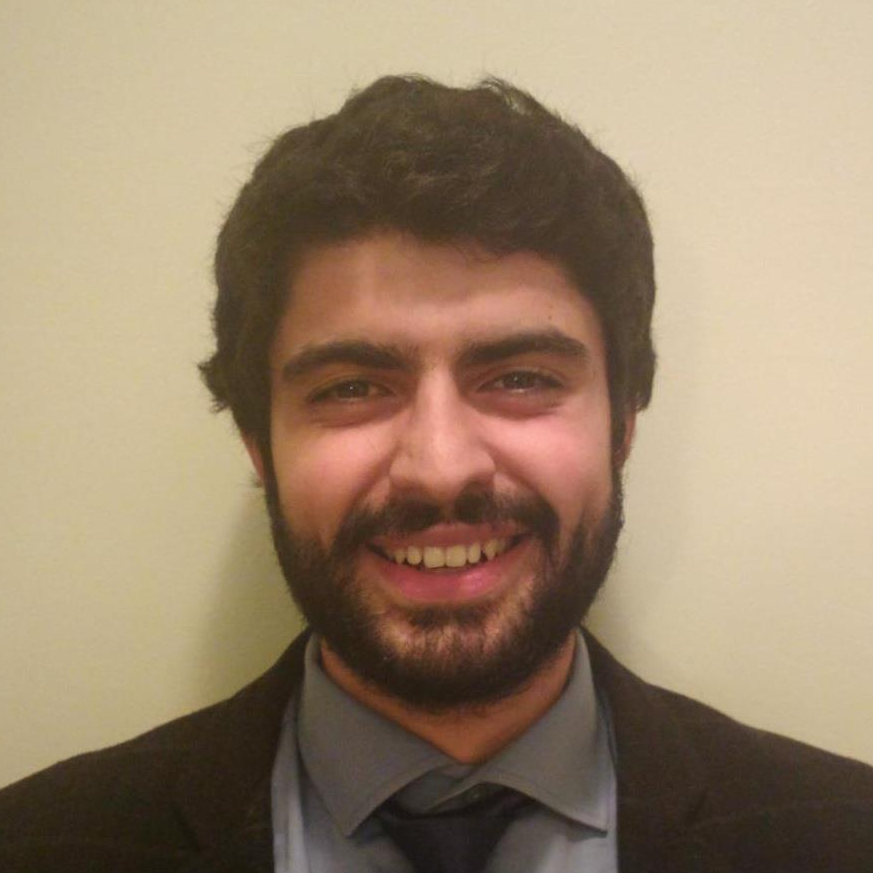
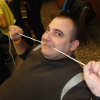
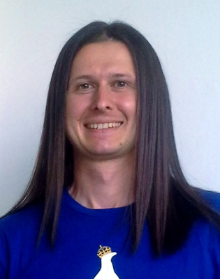
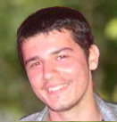

About
TuxCon is a community-driven event about free and open-source software for mobile, embedded and wearable devices. The event is organized by Plovdiv's hackerspace Hackafe and the entry is free. The twitter hashtag of the event is #TuxCon.
Conference is scheduled during the first day of the event (28 June) at International Fair Plovdiv. Hackathons will take place at our hackerspace during the second day of the event (29 June). Please also do not forget to visit the Friday beer event on 27 June.
Please do not hesitate to contact us should you have any questions at info@tuxcon.mobi.
Follow Us
Location
International Fair Hall Kirov. Plovdiv, Bulgaria
The entrance is from "Maritsa" boulevard.
Пловдивски панаир, Палата Киров (номер 5) бул. Марица
Палата Киров се намира на северния край на бул. Марица, на около 200 мeтра от панаирния мост в източна посока покрай реката. Сградата е боядисана в жълто.
Speakers
-

10:00 - 10:15 TuxCon Welcome Speech
Opening of the conference | откриване на конференцията
-

10:20 - 10:50 Linux and Physical computing
Цветан Узунов Olimex
Цветан Узунов се занимава с електроника от 12 годишен, когато сам сглоби първото си радио и то взе, че тръгна. На 15 години откри Apple II на пловдивският панаир чрез игрите Sabotage и Gold Rush, които се зареждаха от касетофон :) и от тогава не спира да учи и открива все нови и интересни работи в областа на хардуера и софтуера. Последната му краста са Open Source Hardware Linux компютрите, които се разработват във фирмата му Олимекс в Пловдив, и които успешно конкурират Raspberry Pi и Beagle Bone Black.
-

11:00 - 11:30 Бърза разработка на потребителски интерфейс с Qt Quick
Николай Николов @task_struct
Николай се занимава с програмиране на С/С++ и с Linux от 2003 година. Има 5 години опит в разработката на HMI за автомобилната индустрия. В момента работи като Linux C++ програмист.
-
11:40 - 12:10 Мобилни приложения, които комуникират
Стефан Чеканов BROSIX
Stefan works for Brosix (www.brosix.com) where he manages projects and is programming. Stefan has been working as a software developer for 20 years. He’s been working on several platforms and programming languages – C/C++, Java, C#, PHP, JavaScript, desktop, web, mobile. For 13 years Stefan is managing projects that scope from desktop through server, web and go to mobile, covering many technologies that has to work in sync.
-

12:20 - 12:50 Creation and maintenance of synced multi-distro GNU/Linux Laboratory
Michael Zissis & Konstantinos Boukouvalas GREEKLUG
Members of the Greek Linux User Group in Thessaloniki.
-
12:50 - 13:30 Lunch | Обяд
Lunch | Обяд
-
13:30 - 14:00 PaaS бъдещето на креативния програмист!
Мариан Игнев @mignev
Мариан Игнев е софтуерен ентусиаст с дълъг и трънлив опит в разработването на Web приложения. Обича да открива и разучава нови гениални технологии всеки ден и да ги споделя. В момента работи като софтуерен разработчик в Нетера, а през свободното си време се занимава с Open Source проекти, спорт и електроника :)
-

14:10 - 14:40 What, Why and How … with Firefox OS?
Pavel Ivanov @ivanovpavel
Pavel is an UX/UI Engineer at Mozilla. In the latter Pavel is focused on the mobile Firefox OS. He could talk for weeks about his work and is one of the few geeks that love their work more than they love beer.
-
14:50 - 15:20 Първи поглед върху Android Wear Developer Preview
Петя Рускова pCloud
Петя се занимава с Android от няколко години и е част от екипа на Българския стартъп pCloud. От Пловдив е и отлично съвместява кариерата си с обучение по специалност Софтуерно инженерство в СУ "Св. Климент Охридски".
-
15:30 - 15:50 Съхранение на данни в Tizen уеб приложения
Леон Анави @leonanavi
Леон обича да се занима с open-source проекти в свободното си време, а през другото работи като софтуерен инженер на мобилни приложения. В момента интересите му са фокусирани върху Tizen, Qt, Qt for Tizen и Sailfish OS.
-

16:00 - 16:20 Cross Platform Native App Development
Oytun Sengul @OytunatLinux
He is interested in everything about operating systems, kernels and IT. Proudly member of Linux Foundation and works about mobile systems and is a contributor in Intel Software projects. Working for Smartface Inc. as community manager. He is the one of the developer of Automotive Grade Linux. Currently, working on SLP and presents his studies on various conferences. He once took place in various Nokia projects. Worked as Community Manager at Turkcell Geleceği Yazanlar, which becomes Turkey’s biggest developer community.
-

16:30 - 16:50 Linux Driver
Димитър Гамишев
Димитър Гамишев е Linux хакeр, който от две години се е задълбал в Linux ядрото и разните драйвери около него, правейки поддръжката за OSHW (Open Source Hardware) платките OLinuXino на Олимекс. Освен това постоянно чопли и Arduino платки. Успешно направи бордови компютър за 20-годишния си мотор Kawasaki и робот с камера и управление през интернет, с който успешно наблюдава какво прави котката му в къщи докато той е на работа.
-
17:00 - 18:00 Lightning talks
Lightning talks
-

17:00 - 17:10 Linuxgpio programmer for avrdude, the story of a small open-source contribution
Радослав Колев kolev.info
-

17:15 - 17:25 CyanogenMod, F-Droid и как да излезнем от екосистемата на Google
Цветомир Денчев
Linux and FOSS enthusiast and Android power user.
Schedule
Conference schedule for 28 June 2014, Hall "Kirov" Internation Fair Plovdiv, Bulgaria (the entrance is from Maritza boulevard).
| Time | Slot | Description |
|---|---|---|
| 10:00 - 10:15 |
TuxCon Welcome Speech
|
Opening of the conference | откриване на конференцията |
| 10:20 - 10:50 | Linux and Physical computing | |
| 11:00 - 11:30 | Бърза разработка на потребителски интерфейс с Qt Quick | Какво представлява Qt Quick? Каква функционалност предлага? Какво е QML и Qt Components? |
| 11:40 - 12:10 | Мобилни приложения, които комуникират | Предизвикателства пред мобилните приложения, които комуникират със сървър или с други мобилни приложения. Как да направим приложението така, че да пести батерия и в същото време информацията да се доставя бързо. Особенности и пречки при комуникация на различни мобилни платформи. |
| 12:20 - 12:50 | Creation and maintenance of synced multi-distro GNU/Linux Laboratory | The work and educational activities of GREEKLUG. |
| 12:50 - 13:30 | Lunch | Обяд | Lunch | Обяд |
| 13:30 - 14:00 | PaaS бъдещето на креативния програмист! | PaaS услугите, са нашумяла тема последните няколкого години. Ще се опитам да дам отговор на въпроса, защо PaaS е по-доброто решение за хосване на сайтове. Ще покажа колко лесно и бързо се правят scalable уеб сайтове в клауда. Ще споделя опита си с другите програмисти как PaaS услугите ни правят по-креативни и фокусирани върху значимите неща за вски един програмист ... писането на код! :) |
| 14:10 - 14:40 | What, Why and How … with Firefox OS? | What is Firefox OS? Why is FirefoxOS different from Existing Mobile OS? How to build my First App for FirefoxOS? |
| 14:50 - 15:20 | Първи поглед върху Android Wear Developer Preview | Ще направим малко демо-приложение, което изпраща нотификации до Android Wear устройство. Ще разгледаме какви действия може да предприеме потребителя от своя часовник и как като разрботчици да се възползваме максимално от това |
| 15:30 - 15:50 | Съхранение на данни в Tizen уеб приложения | Въведение на разработването на HTML5 уеб приложения за Tizen и обзор на възможностите за съхранение на данни в тях с JavaScript. |
| 16:00 - 16:20 | Cross Platform Native App Development | You know WebKit but think it without DOM. Put inside our core engine and your javascript codes running into native libraries of iOS and Android devices. |
| 16:30 - 16:50 | Linux Driver | Митко ще демонстрира как се прави Linux driver за нов хардуер, ще закачи една платка MOD-IO (тази с 4-те релета и аналоговите входове) към OLinuXino и след това ще направи драйвър за нея така че да се появи в линукс като устройство и да може да четеш аналогови величини и да щракаш релета. |
| 17:00 - 18:00 | Lightning talks | Short presentations |
| 17:00 - 17:10 | Linuxgpio programmer for avrdude, the story of a small open-source contribution | Как протича процесът на включване на промени в официалната версия на един проект с отворен код? |
| 17:15 - 17:25 | CyanogenMod, F-Droid и как да излезнем от екосистемата на Google | Какво представляват Custom ROM-овете, какви са предимствата на използването на най-известния от тях (CyanogenMOD) и какви са алтернативите на Google Play? |